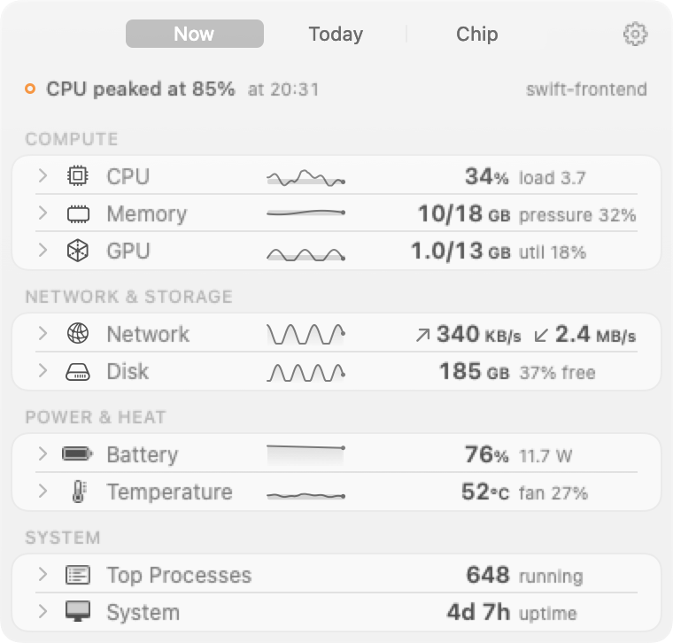
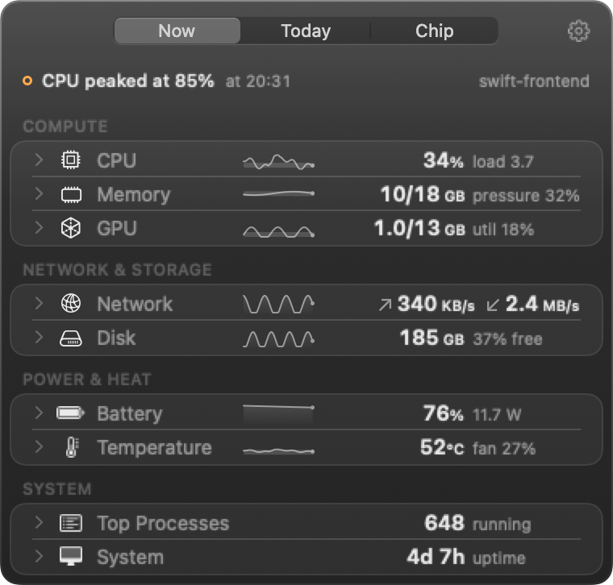

Status line
Is all well?
The first line of the panel says so in words. When one row needs attention, the others step back. If all is calm now, the line says what happened while the panel was closed.
CPU peaked at 85% at 20:31 swift-frontend

